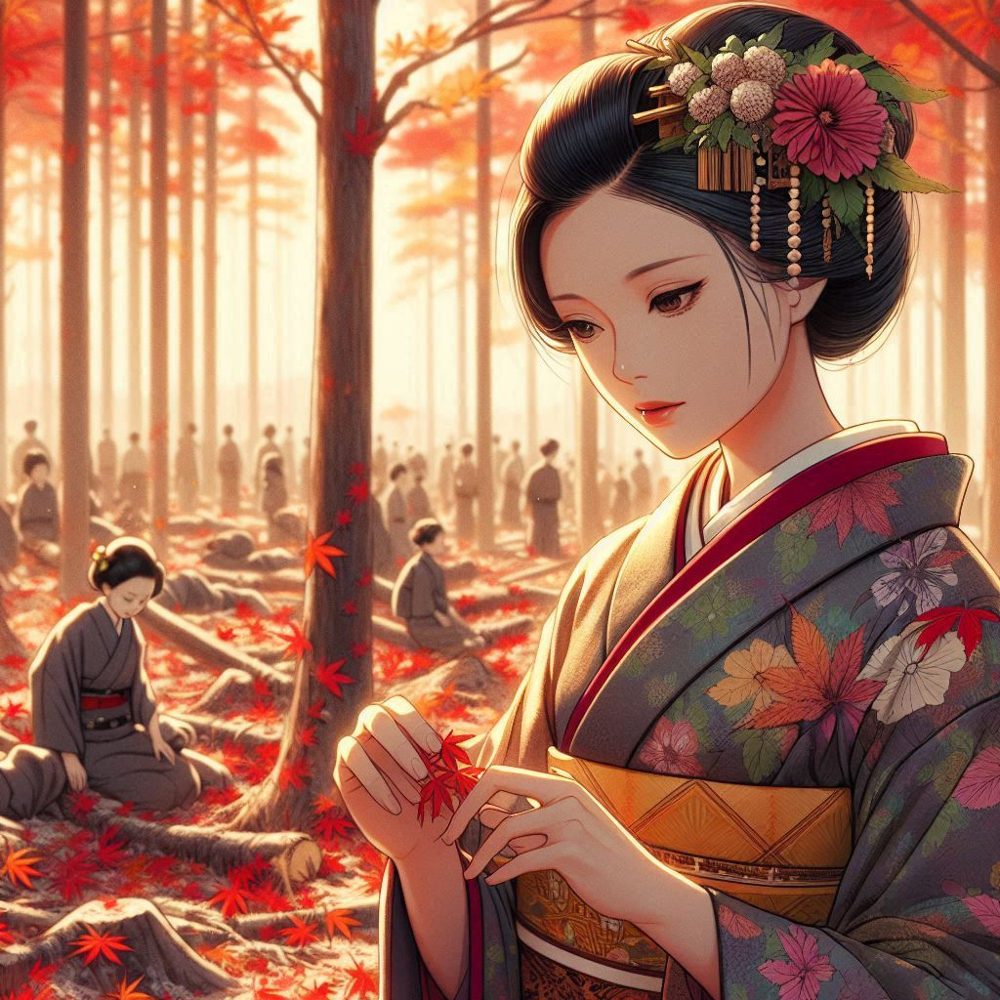

작가
다자이 오사무
출판일
1947년
감상평에 대한 AI그림
다자이 오사무의 사양은 몰락하는 귀족 가문의 삶을 통해 전쟁 전후 일본의 변화와 개인의 고뇌를 섬세하게 그려낸 책이다. 주인공 가즈코의 방황과 절망은 우리에게도 깊은 공감을 자아낸다. 허무와 저항 사이에서 갈등하는 인물들의 모습은 다자이 오사무 특유의 비극적 아름다움을 보여주며 점점 추락해가는 인간 존재의 불안과 시대의 흐름 속에서 새로운 삶을 모색하는 과정이 인상깊게 다가온다.

감상평에 대한 AI평가
이 감상평은 허무, 공감, 비극적 아름다움, 불안, 인상적 여운 등의 감정을 중심으로 구성되어 있다.
✨ 허무 – "허무와 저항 사이에서 갈등하는 인물들"이라는 표현에서, 주인공들이 처한 무력감과 상실감이 강조됨.
✨ 비극적 아름다움 – "다자이 오사무 특유의 비극적 아름다움"이라는 표현에서 작품이 단순히 절망적인 것이 아니라, 그 안에서 어떤 문학적 미를 찾을 수 있음을 보여줌.
✨ 불안 – "점점 추락해가는 인간 존재의 불안"이라는 구절에서 인물들이 시대적 변화 속에서 느끼는 불안을 강조.